Amendment #46 (S.O. 360, 1966)
28 changes: 1 to the First Schedule, 27 to the Second Schedule. 28 applied
What it did to the ministries
- splitMinistry of Steel and Mines splits into Ministry of Mines and Metals (13) and Ministry of Iron and Steel (4) change 16, 23 · histories: Steel and Mines, Mines and Metals, Iron and Steel
- spun offMinistry of Supply and Technical Development is separated from Ministry of Industry and Supply (5 subjects) change 14, 15, 22 · histories: Industry, Supply, Technical Development & Materials Planning
- mergedLabour and Employment, and Rehabilitation, merge into one ministry. change 17, 20, 21 · histories: Labour & Employment, Rehabilitation, Labour and Rehabilitation
- mergedMinistry of Transport and Ministry of Civil Aviation merge into Ministry of Transport and Aviation change 2, 25 · histories: Transport, Civil Aviation, Transport and Aviation
- absorbedMinistry of Community Development and Cooperation joins Ministry of Food, Agriculture, Community Development and Cooperation (66 → 76) change 5, 11, 12 · histories: Community Development and Co-operation, Agriculture
- renamedMinistry of Food and Agriculture is renamed Ministry of Food, Agriculture, Community Development and Cooperation change 11, 12 · histories: Agriculture
- renamedMinistry of Health is renamed Ministry of Health and Family Planning change 13 · histories: Health and Family Planning, and Works Housing & Urban Development
- renamedMinistry of Industry and Supply is renamed Ministry of Industry change 14, 15 · histories: Industry
- renamedMinistry of Works and Housing is renamed Ministry of Works, Housing and Urban Development change 26 · histories: Supply
- renamedDepartment of Social Security is renamed Department of Social Welfare change 27 · histories: Social Welfare
- grewMinistry of Law grows from 30 to 38 subjects change 17, 18, 19 · histories: Law and Justice
The order, page by page
Page 1 of 16
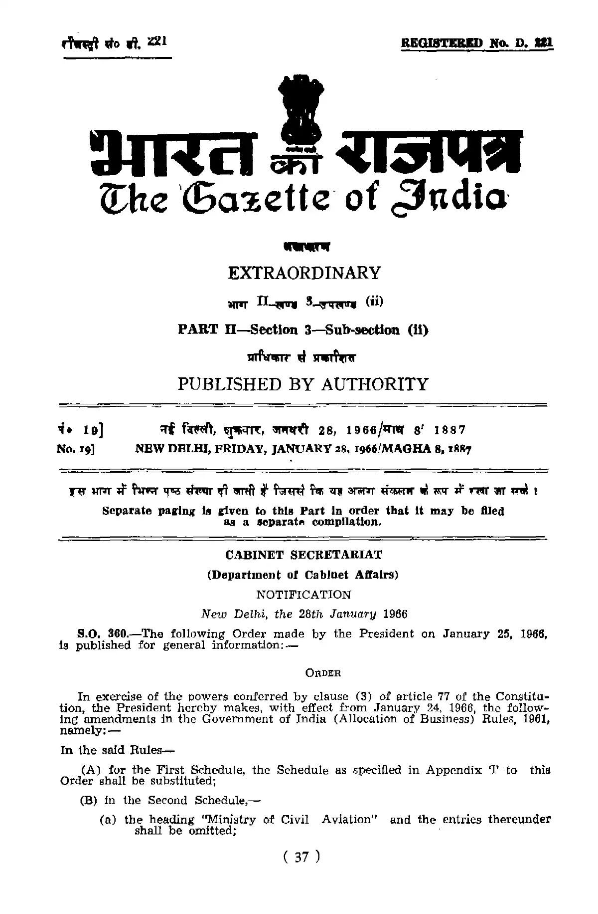
12Schedule 1
- THE FIRST SCHDULE (Rule 2) Ministries, Departments, Secretariats and Offices
- 1. Ministry of Commerce.
- 2. Ministry of Defence
- -. Department of Defence Production and a
- Department of Defence Supplies within the Ministry)
- 3. Ministry of Education.
and 38 more
- 4. Ministry of External Affairs.
- 5. Ministry of Finance: (1) Department of Economic Affairs.
- ii. Department of Expenditure
- ii. Department of Revenue and Insurance.
- iv. Department of Co-ordination.
- 6. Ministry of Food, Agriculture, Community Development and Cooperation:
- i. Department of Agriculture. (1) Department of Food. (11) Department of Community Development.
- iv. Department of Cooperation.
- 7. Ministry of Health and Family Planning: (1) Department of Health.
- ii. Department of Family Planning.
- 8. Ministry of Home Affairs
- -. Department of Administrative Reforms
- 9. Ministry of Industry.
- 10. Ministry of Information and Broadcasting.
- 11. Ministry of Iron and Steel.
- 12. Ministry of Irrigation and Power.
- 13. Ministry of Labour, Employment and Rehabilitation (1) Department of Labour and Employment.
- ii. Department of Rehabilitation.
- 14. Ministry of Law: (1) Department of Legal Affairs.
- ii. Legislative Department
- ii. Department of Company Affairs.
- 15. Ministry of Mines and Metals.
- 16. Ministry of Petroleum and Chemicals: (1) Department of Petroleum
- ii. Department of Chemicals.
- 17. Ministry of Railways (Railway Board)
- 18. Ministry of Supply and Technical Development.
- 19. Ministry of Transport and Aviation:
- i. Department of Aviation.
- ii. Department of Transport, Shipping and Tourism.
- 20. Ministry of Works, Housing and Urban Development.
- 21. Department of Atomic Energy.
- 22. Department of Parliamentary Affairs.
- 23. Department of Communications.
- 24. Department of Social Welfare.
- 25. Cabinet Secretariat: (1) Department of Statistics.
- G. 3(H)] 4I
- 26. President's Secretariat. 27, Prime Minister's Secretariat.
- 28. Planning Commission.
applied at schedule 1 in the Rules after #46
read hindi missing, read page break
Schedule 2 › Ministry of Civil Aviation
applied at schedule 2 › ministry in the Rules after #46
Page 2 of 16
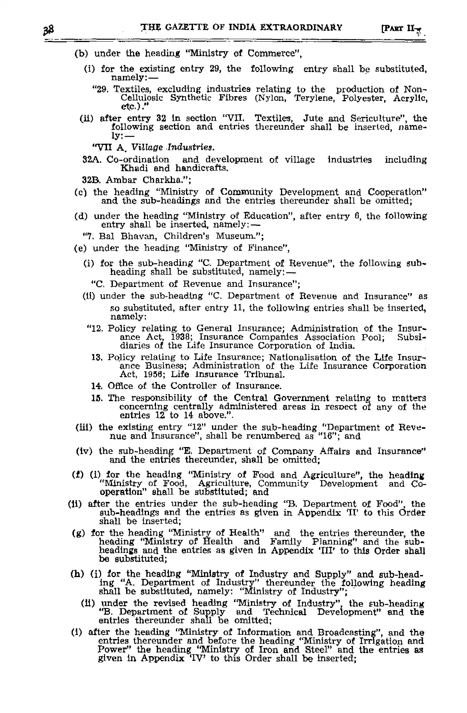
345678910111213141516Schedule 2 › Ministry of Commerce › entry 29
- 29. Textiles, excluding industries relating to the production of Non- Cellulosic Synthetic Fibres (Nylon, Terylene, Polyester, Acrylic etc.).
applied at schedule 2 › ministry MINISTRY OF COMMERCE › group_heading VII › entry 29 in the Rules after #46
after Schedule 2 › Ministry of Commerce › VII. Textiles, Jute and Sericulture › entry 32
- VII. Textiles, Jute and Sericulture", the following section and entries thereunder shall be inserted, namely:—
- VIIA. Village Industries.
- 32A. Co-ordination and development of village industries including Khadi and handicrafts
- 32B. Ambar Charkha.
applied at schedule 2 › ministry MINISTRY OF COMMERCE › group_heading VII › entry 32 in the Rules after #46
Schedule 2 › Ministry of Community Development and Cooperation
applied at schedule 2 › ministry in the Rules after #46
after Schedule 2 › Ministry of Education › entry 6
- 7. Bal Bhavan, Children's Museum.
applied at schedule 2 › ministry MINISTRY OF EDUCATION › ministry MINISTRY OF EDUCATION › entry 7 in the Rules after #46
Schedule 2 › Ministry of Finance › Department of Revenue
- C. Department of Revenue and Insurance
applied at schedule 2 › ministry MINISTRY OF FINANCE › department C in the Rules after #46
read hindi missing
after Schedule 2 › Ministry of Finance › Department of Revenue and Insurance › entry 11
- 12. Policy relating to General Insurance; Administration of the Insurance Act, 1938; Insurance Companies Association Pool; Subsidiaries of the Life Insurance Corporation of India.
- 13. Policy relating to Life Insurance; Nationalisation of the Life Insurance Business; Administration of the Life Insurance Corporation Act, 1956; Life Insurance Tribunal.
- 14. Office of the Controller of Insurance.
- 15. The responsibility of the Central Government relating to matters concerning centrally administered areas in respect of any of the entries 12 to 14 above.
applied at schedule 2 › ministry MINISTRY OF FINANCE › department C › entry 12 in the Rules after #46
Schedule 2 › Ministry of Finance › Department of Revenue and Insurance › entry 12
renumbered as 16
applied at schedule 2 › ministry MINISTRY OF FINANCE › department C › entry 16 in the Rules after #46
Schedule 2 › Ministry of Finance › Department of Company Affairs and Insurance
applied at schedule 2 › ministry MINISTRY OF FINANCE › department E in the Rules after #46
Schedule 2 › Ministry of Food and Agriculture
- Ministry of Food, Agriculture, Community Development and Cooperation
applied at schedule 2 › ministry Ministry of Food, Agriculture, Community Development and Cooperation in the Rules after #46
read hindi missing
after Schedule 2 › Ministry of Food, Agriculture, Community Development and Co- operation › Department of Food
- C. DEPARTMENT OF COMMUNITY DEVELOPMENT
- 1. Rural Community Development Programme including Programmes of Rural Works and local Development Works other than piped water supply.
- 2. Panchayati Raj.
- 3. Training and orientation of personnel, both officials and non-officials, connected with the Community Development Programme and the Panchayati Raj Movement.
- 4. Study and Research on Community Development Programme and Panchayati Raj.
- NOTE The Central Government is concerned with major questions of policy relating to the Community Development Programme (including allotment of blocks to States), formulation of broad pattern of expenditure to be incurred in the blocks and payment of the Centre's share of expenditure on the…
and 8 more
- D. DEPARTMENT OF COOPERATION
- 1. Agricultural indebtedness and credit.
- 2. Cooperation in agricultural sector.
- 3. Matters relating to National Cooperative Organisations.
- 4. National Cooperative Development Corporation.
- 5. Incorporation, regulation and winding up of cooperative societies with objects not confined to one State.
- 6. Training of personnel of cooperative departments and cooperative institutions (including education of member Trs, office bearers and non-officials).
- NOTE. The Department of C Cooperation is responsible for basic cooperative policies and for co-ordinating co-operative activities in all sectors. The Ministries are tion of programme responsible for the formulation and implementawithin their respective spheres.
applied at schedule 2 › ministry Ministry of Food, Agriculture, Community Development and Cooperation › department C in the Rules after #46
read hindi missing
Schedule 2 › Ministry of Health
- APPENDIX III Minist ry of Health and Family Planning
- A. DEPARTMENT OF HEALTH
- I. Union Business
- 1. Union agencies studies in medicine and institutes for research or for the promotion of special and nutrition including all matters relating to the:-
- i. Central Research Institute, Kasauli. The Al India Institute of Hygiene and Public Health, Calcutta.
- iii. The A Intigen Production Unit, Calcutta.
and 87 more
- iv. The N Malaria Institute of India, Delhi.
- v. The Central Drugs Laboratory, Calcutta.
- vi. Colle
- vil. Lady's ge of Nursing, New Delhi. Reading Health School & Ram Chand Lohla Infant Welfare Centre, Delhi. (viii) Hospital for Mental Diseases, Ranchi.
- ix. Willingdon Hospital & Nursing Home, New Delhi
- x. Safdarjang Hospital, New Delhi.
- xi. The Civil and Military Dispensary and the X-ray Installation, Simla.
- xii. The Dispensaries at Dum Dum and Santa Cruz Airports.
- xii. Medical Stores, Depots and Factories.
- xlv. B.C.G. Vaccine Laboratory, Guindy.
- xv. Demographic Training and Research Centre, Bombay.
- xvi. Medical College, Pondicherry. (xvil) Contributory Health Service Scheme for Central Government Servants and members of their families in Delhi and New Delhi; and (xviii) Serologist and Chemical Examiner to the Government of India, Calcutta.
- 2. Part quarantine (sea and air) seamen's and marine hospitals and hospitals connected with port quarantine
- 3. Port and Air Port Health Organisations.
- 4. Medical Examination of Seamen.
- 5. International sanitary regulations.
- 6. World Health Organisation (WHO).
- 7. Rockefeller Foundation and Ford Foundation.
- 8. Prevention of Food Adulteration Act, 1954 and the Central Food Laboratory set up thereunder.
- 9. Higher training abroad in medical and allied subjects.
- 10. Assistance under the Colombo and Point Four Programme.
- 11. National Malaria Eradication Programme.
- 12. National Filaria Contic Programme.
- II. List of business for Legislative and Executive purposes in respect of Union Territories
- 13. Local Government, that is to say, the constitution and powers of Municipal Corporations (excluding the Municipal Corporation of Delhi). Municipalities (excluding the New Delhi Municipal Commit tee), district boards and other local self-Government administrations excluding Pan chayati Raj…
- 14. The Delhi Water Supply and Sewage Disp paal Committee of the Municipal Corporation, Delhi.
- 15. Maternity and Child Welfare.
- 16. Public health and sanitation; water supply; sewage and drainage; hospitals and dispensaries
- 17. Pilgrimages other than pilgrimages to places outsta eIndia.
- 18. Burials and burial grounds; cremations and cremal on grounds.
- 19. Inns and inn-keepers.
- 20. Supply and distribution of cinchona and quinine.
- 21. Scientific societies and associations pertaining to subjects dealt with in the Ministry.
- 22. Charitable and religious endowments pertaining to subjec■ dealt with in the Ministry.
- III. List of business with which the Central Government deal apacities for all na Legislative capacity only for the Union and in both legislative and executive a Union Territories
- 23. The medical profession and medical education.
- 24. The nursing profession and nursing education.
- 25. The pharmaceutical profession and pharmaceutical education.
- 26. The dental profession and dental education. 27, Homoeopathy.
- 28. Lunacy and mental deficiency.
- 29. Drugs standards.
- 30. Objectionable advertisements relating to drugs and medicines.
- 31. Prevention of the extension from one State to another of infectious or contagious diseases affecting human beings.
- 32. Adulteration of foodstuffs and drugs.
- 33. Indigenous system of medicine
- 34. The Central Health Service.
- IV. Miscellaneous Business
- 35. The Medical Council of India.
- 36. The Central Council of Health.
- 37. Resettlement of demobilised medical and auxiliary medical personnel.
- 38. Red Cross except problems relating to protection of prisoners of war and other war victims.
- 39. Dental Council of India.
- 40. Indian Nursing Council.
- 41. Pharmacy Council of India.
- 42. Indian Pharmacopoeia Committee.
- 43. B.C.G. Vaccination against Tuberculosis.
- 44. Concession of medical attendance and treatment for Central Government servants other than (i) those in Railway Service (1) those paid from Defence Services Estimates (ii) officers governed by the All India Service (M.A.) Rules 1954 and (iv) officers governed by the Medical Attendance Rules, 1955.
- 45. Medical Examination and Medical Boards for Central Civil Services (other than those controlled by the Ministry of Railways and those paid from Defence Estimates excepting Civilian Services). 46, Indian Red Cross Society.
- 47. The Lady Hardinge Medical College and Hospital, New Delhi, and the Kalavati Saran Children's Hospital, New Delhi.
- 48. The Central Council of Local Self-Government.
- 49. Vallabh Bhai Patel Chest Institute
- 50. All India Institute of Physical Medicine and Rehabilitation, Bombay.
- 51. Spas and health resorts.
- 52. Drinking water supply and sanitation
- 53. Collection and collation of information with regard to local bodies, all States and Union Territories.
- 54. Trachoma Pilot Project.
- 55. Leprosy Control Scheme.
- 36. Reimbursement of customs duty on gifts of non-consumable medical stores received from abroad.
- 57. The Indian Council of Medical Research, New Delhi.
- 58. The All India Institute of Medical Sciences, New Delhi.
- 59. Chittaranjan National Cancer Research Centre, Calcutta.
- 60. Central Institute of Research on Indigenous Systems of Medicine, Jamnagar.
- 61. Post-Graduate Training Centre, Jamnagar
- 62. Physiotherapy Training Centre, King Edward Memorial Hospital, Bombay.
- 63. Central Leprosy Teaching and Research Institute, Madras.
- 64. All India Mental Health Institute, Bangalore.
- 65. Nutrition Research Institute, Coonoor.
- 66. Offences against laws with respect to any of the matters in the above list.
- 67. Inquiries and statistics for the purpose of any of the matters in the above list.
- 68. Fees in respect of any of the matters in the above list, but not including fees taken in any court.
- B. DEPARTMENT OF FAMILY PLANNING
- 1. Policy and organisation for Family Planning.
- 2. (1) Organisation and direction of education, training and research in all aspects of family planning, including higher training abroad. (H) Family Planning Training and Research Centre, Bombay.
- iii. Family Planning Training, Demonstration and Experimental Centre Ramanagram.
- 3. Production and supply of aids to family planning.
- 4. Liaison with foreign countries and international bodies as regards matters relating to family planning.
- 5. Inquiries and statistics relating to family planning.
applied at schedule 2 › ministry MINISTRY OF HEALTH in the Rules after #46
read hindi missing, read page break
Schedule 2 › Ministry of Industry and Supply › Department of Industry
- Ministry of Industry
applied at schedule 2 › ministry Ministry of Industry in the Rules after #46
read hindi missing, states inferred one heading
Schedule 2 › Ministry of Industry › Department of Supply and Technical Development
applied at schedule 2 › ministry Ministry of Industry › department B in the Rules after #46
after Schedule 2 › Ministry of Information and Broadcasting
- APPENDIX TV Ministry of Iron and Steel
- 1. Steel plants in the public and private sectors, the rerolling industry and ferro-alloys including all future development.
- 2. Development of ore mines, coal washeries etc., for steel plants.
- 3. Production, distribution, prices, imports and exports of iron and steel and ferro-alloys.
- 4. Planning, development and control of, and assistance to, all iron and steel industries.
- 5. All Attached or Subordinate Offices or other organisations concerned with any of the subjects specified in this list.
and 1 more
- 6. Public sector projects falling under the subjects included in this list except such projects as are specifically allotted to any other Department
applied at schedule 2 › ministry Ministry of Iron and Steel in the Rules after #46
read hindi missing
Page 3 of 16
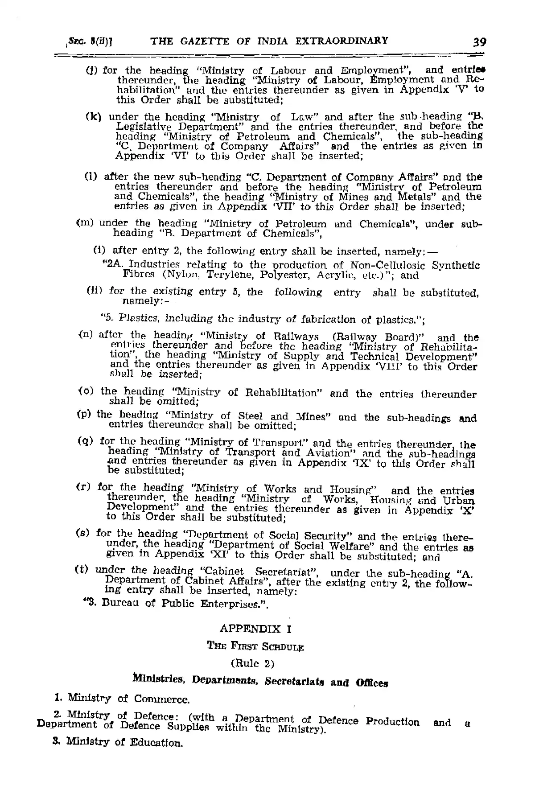
171819202122232425262728Schedule 2 › Ministry of Labour and Employment
- Ministry of Labour, Employment & Rehabilitation
- A. DEPARTMent of LaboUR AND EMPLOYMENT
- I. PART I
- 1. In respect of Union Railways-payment of wages, trade disputes, hours of work from employees not covered by the Factories Act, and regulation of employment of children. SEC. 3(U)]
- 2. In respect of docks-dockyard labour.
- 3. Regulation of labour and safety in mines and oilfields.
and 65 more
- II. PART II
- 4. Factories.
- 5. Welfare of Labour-Industrial, commercial and agricultural-conditions of labour; provident funds; employers' liability and workmen's compensation; health and sickness insurance, including invalidity pensions, old age pensions; improvement of working conditions in factories; canteens in industrial…
- 6. Trade unions; industrial and labour disputes.
- 7. Labour statistics.
- 8. Employment and unemployment
- 9. Vocational and technical training of craftsmen.
- III. PART III
- 10. Items mentioned in Part II above.
- IV. PART IV
- 11. The implementing of treaties and agreements with other countries.
- 12. Offences against laws.
- 13. Inquiries and Statistics.
- 14. Fees but not fees taken in any court.
- 15. Jurisdiction of powers of all courts (except the Supreme Court).
- V. PART V
- 16. Employment Exchanges.
- 17. Schemes for Training of Instructors, Craftsmen, technicians at foreman and supervisory level, both in India and abroad, Apprentice Training.
- 18. International Labour Organisation.
- 19. Tripartite Labour Conferences.
- 20. War Injuries (Compensation Insurance) Act, 1943 and Scheme.
- 21. Administration of Essential Service (Maintenance) Ordinance.
- 22. Administration of Laws connected with safety and welfare in mines and of the organisations of the Chief Inspector of Mines Coal and Mica Mines Welfare.
- 23. Administration of Dock Workers (Regulation of Employment) Act, 1948 Indian Dock Labourers Act, 1934 and the Schemes and Regulations framed thereunder.
- 24. Administration of the Tea Districts Emigrant Labour Act and the Organisation of the Controller of Emigrant Labour.
- 25. Administration of the Minimum Wages Act.
- 26. Administration of labour laws in Central Sphere Undertakings.
- 27. Labour Statistics; Organisation of Director, Labour Bureau.
- 28. Organisation of Chief Labour Commissioner and constitution and administration of Central Government Industrial Tribunals, Central Government Labour Courts, National Industrial Tribunal.
- 29. Organisation of Chief Adviser Factories, including Central Labour Institute, Productivity and TWI Centres and Regional Museums of Safety, Health and Welfare.
- 30. Plantation Labour and administration of Plantations Labour Act.
- 31. Recruitment, posting, transfer and training of Government Labour Officers.
- 32. Administration of the Working Journalists (Conditions of Service) and Miscellaneous Provisions Act.
- 33. Schemes regarding workers' education.
- 34. Schemes regarding workers' participation in management.
- 35. Discipline in Industry.
- 36. Constitution of Wage Boards for individual Industries.
- 37. Regulation of working conditions of motor transport workers.
- 38. Evaluation of the implementation of Labour laws in the country.
- B. DEPARTMENT OF REHABILITATION
- 1. Camps for displaced persons from East Pakistan.
- 2. Relief for displaced persons (including supplies of medicine, food, clothing and other necessities).
- 3. Rehabilitation of displaced persons.
- 4. Assistance to displaced persons from East Pakistan in setting up business or industry including provision of settlement on land.
- 5. Housing of displaced persons.
- 6. Setting up of new industries, for providing employment, in places where there are heavy concentrations of displaced persons from East Pakistan.
- 7. Rehabilitation Industries Corporation.
- 8. Matters relating to grants-in-aid to educational, medical and cultural institutions.
- 9. Training and employment of displaced persons from East Pakistan.
- 10. Management of evacuee property.
- 11. Evacuee Interest (Separation) Act, 1951.
- 12. The Transfer of Evacuee Deposits Act, 1954.
- 13. Displaced Persons (Debts Adjustment) Act, 1951.
- 14. Matters relating to the Goa, Daman and Diu Administration of Evacuee Property Act, 1964.
- 15. All negotiations concerning the evacuee property-movable and immovable of displaced persons from Pakistan left behind by them in Pakistan and restoration of movable property including fire-arms, lockers, safe-deposits, etc.
- 16. Verification of displaced persons' claims for the immovable property left in West Pakistan.
- 17. Settlement of verified claims and payment of rehabilitation grants to displaced persons in respect of immovable property left by them in West Pakistan.
- 18. Valuation and disposal of Government built and evacuee properties.
- 19. Verification and payment of claims of displaced Government servants of undivided Provinces and servants of States and local bodies in respect of pensions provident funds, leave salary and security deposits. *As regards rehabilitation matters in States, the Central Government is concerned mainly…
- 20. Rehabilitation of migrants from Pakistan-occupied areas of Jammu and Kashmir.
- 21. Rehabilitation of Muslim migrants who have returned from East Pakistan to West Bengal under the Nehru-Liaquat Pact; rehabilitation of Muslims internally displaced in West Bengal at the time of communal disturbances on the partition of the country; and restoration of mosques and other places of…
- 22. Dandakaranya Scheme Integrated development of Dandakaranya area for the rehabilitation of East Pakistan displaced persons and welfare of tribals.
- 23. Development of such special areas as may be indicated by the Prime Minister from time to time.
- 24. Relief and Rehabilitation measures for Indian nationals repatriated from Burma, Ceylon and Mozambique.
- 25. All Attached or Subordinate Offices or other organisations concerned with any of the subjects specified in this list.
applied at schedule 2 › ministry MINISTRY OF LABOUR AND EMPLOYMENT. in the Rules after #46
read hindi missing, read page break
after Schedule 2 › Ministry of Law › Legislative Department
- C. DEPARTMENT OF COMPANY AFFAIRS
- 1. Administration of the Companies Act.
- 2. Administration of Securities Contracts (Regulation) Act, 1956.
- 3. Regulation of Stock Exchanges.
- 4. Profession of Accountancy (Chartered Accountants Act). Profession of Costs and Works Accountancy and Company Secretaryship.
- 5. Collection of Statistics relating to Companies.
and 3 more
- 6. Legislation of the Indian Partnership Act and the exercise of certain functions under Chapter VII of the Act in centrally administeraed areas. (The administration of the Act vests in the State Governments).
- 7. Commission of Inquiry.
- 8. The responsibility of the Centre relating to matters concerning centrally administered areas in respect of any of the above items.
applied at schedule 2 › ministry MINISTRY OF LAW. › department C in the Rules after #46
read hindi missing
after Schedule 2 › Ministry of Law › Department of Company Affairs
- Ministry of Mines and Metals
- 1. Production, supply distribution and prices of coal and coke.
- 2. Exploration of lignite deposits in India.
- 3. Setting up of synthetic oil plant based on coal and low temperature carbonization plants for the production of smokeless domestic coal.
- 4. Administration of the Coal Mines (Conservation and Safety) Act, 1952.
- 5. Administration of the Coal Grading Board Act, 1955.
and 9 more
- 6. Administration of Coal Bearing Areas (Acquisition and Development) Act
- 1957.
- 7. Regulation of mines and minerals development under the Mines and Minerals (Regulation and Development) Act, 1957 and other Union laws including questions concerning various States and incidental business in respect of these.
- 8. All metals (other than those dealt with in the Ministry of Iron and Steel) such as Aluminium, Zinc, Copper and all minerals not covered by entries i to T above.
- 9. Planning, development and control of, and assistance to, all industries dealt. with by the Department.
- 10. Geological Survey of India.
- 11. Indian Bureau of Mines.
- 12. All other attached or Subordinate Offices or other organisations concerned with any of the subjects specified in this list.
- 13. Public sector projects falling under the subjects included in this list except such projects as are specifically allotted to any other Department.
applied at schedule 2 › ministry MINISTRY OF LAW. › department C in the Rules after #46
read hindi missing, read page break
after Schedule 2 › Ministry of Petroleum and Chemicals › Department of Chemicals › entry 2
- 2A. Industries relating to the production of Non-Cellulosic Synthetic Fibres (Nylon, Terylene, Polyester, Acrylic, etc.)
applied at schedule 2 › ministry MINISTRY OF PETROLEUM & CHEMICALS › department B › entry 2A in the Rules after #46
Schedule 2 › Ministry of Petroleum and Chemicals › Department of Chemicals › entry 5
- 5. Plastics, including the industry of fabrication of plastics.
applied at schedule 2 › ministry MINISTRY OF PETROLEUM & CHEMICALS › department B › entry 5 in the Rules after #46
after Schedule 2 › Ministry of Railways (Railway Board)
- Ministry of Supply and Technical Development
- 1. Purchase, inspection and shipment of stores for the Central Government other than the items the purchase, Inspection and shipment of which are delegated to other authorities by a general or special order
- 2. Disposal of surplus stores
- 3. Residual work of supply and disposal relating to the late war organisations including the Directorate General, Aircraft, including Civil Maintenance Units and Directorate General, Ship Repairs.
- 4. Administration of:
- a. Directorate General of Supplies and Disposals
and 4 more
- b. Government Test House, Alipore, Calcutta
- c. India Store Department, the United Kingdom
- d. India Supply Mission, the U.S.A.
- 5. Technical Development, including Directorate General of Technical Development.
applied at schedule 2 › ministry Ministry of Supply and Technical Development in the Rules after #46
read hindi missing
Schedule 2 › Ministry of Rehabilitation
applied at schedule 2 › ministry in the Rules after #46
Schedule 2 › Ministry of Steel and Mines
applied at schedule 2 › ministry in the Rules after #46
Schedule 2 › Ministry of Transport
- Ministry of Transport and Aviation
- A. DEPARTMENT OF AVIATION
- 1. Meteorological Organisation.
- 2. Aircraft and air navigation; provision of aerodromes; regulation and organisation of air traffic and of aerodromes (excepting sanitary control of Air navigation).
- 3. Beacons and other provisions for the safety of aircraft.
- 4. Carriage of passenger and goods by air.
and 36 more
- 5. Corporations established under the Air Corporations Act, 1953.
- 6. Railway Inspectorate.
- 7. Offences against laws with respect to any of the matters specified in this list.
- 8. Inquiries and statistics for the purpose of any of the matters specified in this list.
- 9. Fees in respect of any of the matters specified in this list but not including fees taken in any court.
- 10. Implementation of Treaties and Agreements relating to any of the matters specified in this list.
- B. DEPARTMENT OF TRANSPORT, SHIPPING & TOURISM
- I. The following subjects which fall within list I of the Seventh Schedule to the Constitution of India
- 1. Maritime shipping and navigation; provision of education and training for the mercantile marine.
- 2. Lighthouses and lightships.
- 3. Major ports L.e., the ports of Calcutta, Bombay Madras, Visakhapatnam Cochin and Kandla. SBC. 5(ii)]
- 4. Compulsory insurance of motor vehicles.
- 5. Administration of the Road Transport Corporation Act, 1950.
- 6. Highways declared by or under law made by Parliament to be national highways.
- 7. Shipping and navigation including carriage of passengers and goods on inland waterways declared by Parliament by law to be National waterways as regards mechanically propelled vessels; the rule of the road on such waterways.
- 8. Ship building (Public sector).
- II. In respect of the Union Territories
- 9. Roads other than national highways.
- 10. Tramways within municipal limits.
- 11. Inland waterways and traffic thereon.
- 12. Administration of the Motor Vehicles Act, 1939, and taxation of motor vehicles.
- 13. Vehicles other than mechanically propelled vehicles.
- III. In respect of the Union Territories of Andaman and Nicobar Islands and Laccadive, Minicoy and Amindivi Islands
- 14. Organisation and maintenance of mainland-islands and inter-island shipping services.
- IV. Other subjects not included under the preceding sub-headings
- 15. Central Road Fund.
- 16. Coordination and research pertaining to road works.
- 17. Road works financed in whole or in part by the Central Government, including road works in Sikkim and the tribal areas of Assam specified in parts A and B of the table appended to para 20 of the Sixth Schedule to the Constitution.
- 18. Motor vehicles legislation.
- 19. Legislation relating to shipping and navigation on Inland waterways 85 regards mechanically propelled vessels and the carriage of passengers and goods on Inland waterways.
- 20. Tourist traffic development.
- 21. Planning of road and inland waterways transport.
- 22. Promotion of Transport Cooperatives in the field of motor transport and inland water transport.
- 23. Development of township of Gandhidham.
- 24. Legislation relating to and co-ordination of the development of minor ports.
- 25. Centralised arrangements for the servicing and repairs of staff cars belonging to the Central Government except those under the control and use of the Ministry of Railways and the Department of Atomic Energy.
applied at schedule 2 › ministry MINISTRY OF TRANSPORT in the Rules after #46
read hindi missing, read page break
Schedule 2 › Ministry of Works and Housing
- Ministry of Works, Housing & Urban Development
- 1. Property of the Union (not being railway, naval, military or air force works or being the property of the Department of Atomic Energy) except (i) buildings the construction of which has been financed otherwise than from the civil works budget and (ii) buildings, the control of which has at the…
- 2. All Government Civil works and buildings including those of Union Territories excluding roads and excluding works executed by or buildings belonging to the Railways, P. & T. and the Department of Atomic Energy.
- 3. Horticultural operations.
- 4. Indian Service of Engineers
- 5. Administration of Government estates under the control of the Ministry of Works, Housing & Urban Development at Delhi, Bombay, Calcutta, Simla, Nagpur etc. Move of offices outside Delhi including the satellite townships around Delhi deconcentration of offices from Bombay and Calcutta; location of…
and 20 more
- 6. Allotment of accommodation in Vigyan Bhavan.
- 7. Administration of the Requisitioning and Acquisition of Immovable Property Act, 1952.
- 8. Control and administration of Hotel Janpath, New Delhi, Grand Hotel, Simla and Government Hostels.
- 9. Administration of Delhi Hotels (Control of Accommodation) Act, 1949.
- 10. The Public Premises (Eviction of unauthorised occupants) Act, 1958.
- 11. Administration of Rehabilitation Markets-Raisina Road Market; Sarojini Market, Sarojini Nagar, New Central Market, Connaught Circus; Kamla Market and Pleasure Garden Market.
- 12. Formulation of housing policy and programme Review of the implementation of the Plan Schemes. Collection and dissemination of data on housing, building materials and building techniques. General measures for reduction of building costs. International cooperation and technical assistance in housing.
- 13. Stationery and printing for the Government of India including official publications.
- 14. Explosives, administration of the Indian Explosives Act, 1884, the Petroleum Act, 1934, and the Rules made thereunder; but not the Explosive Substances Act.
- 15. The Ashoka Hotels Ltd., New Delhi.
- 16. Central Regional and Urban Planning Organisation.
- 17. Town Planning Organisation, Delhi.
- 18. Delhi Development Authority.
- 19. Improvement Trusts.
- 20. Master Plan of Delhi.
- 21. Development of land declared as 'development areas' under the Delhi Development Act.
- 22. Development of Government colonies in Delhi.
- 23. Allotment of Government lands in Delhi.
- 24. All Attached or Subordinate Offices or other organisations concerned with any of the subjects specified in this list.
- 25. Public sector projects falling under the subjects Included in this list except such projects as are specifically allotted to any other Department.
applied at schedule 2 › ministry Ministry of Works & Housing in the Rules after #46
read hindi missing, read page break
Schedule 2 › Department of Social Security
- Department of Social Welfare
- 1. Social Welfare.
- 2. Child Welfare and Co-ordination of activities of other Ministries and Organisations in connection with this subject.
- 3. Orphans and Orphanages.
- 4. Beggary, Juvenile vagrancy, juvenile delinquency and other 'care' programmes. Sec. §(H)]
- 5. United Nations International Children's Emergency Fund (UNICEF)
and 12 more
- 6. Education of the handicapped.
- 7. Social and Moral Hygiene Programmes so far, as they relate to women in moral danger, that is to say, Rescue Homes and Reception Centres, including aftercare programmes, the administration of the Suppression of immoral Traffic in Women and Girls Act, 1956 and the establishment and maintenance of…
- 8. Scheduled Castes, Scheduled Tribes, ex-criminal Tribes and other Backward Classes
- 9.
- i. Appointment, resignation etc. of Special Officer for Scheduled Castes and Scheduled Tribes etc; and (H) Reports of the Special Officer.
- 10. (1) Commission to report on the administration of Scheduled Areas and the welfare of Scheduled Tribes; and
- i. Issue of directions regarding the drawing up and execution of schemes essential for the welfare of the Scheduled Tribes in the State.
- 11. Reports of the Commission to investigate into conditions of Backward Classes.
- 12. Unemployment Insurance.
- 13. Social security measures, including the administration of the Employees State Insurance Act, the Employees' Provident Funds Act, and Coal Mines Provident Fund Act.
- 14. Central Social Welfare Board.
- 15. All attached or subordinate offices or other organisations concerned with any of the subjects specified in this list.
applied at schedule 2 › department DEPARTMENT OF SOCIAL SECURITY in the Rules after #46
read hindi missing, read page break
after Schedule 2 › Cabinet Secretariat › Department of Cabinet Affairs › entry 2
- 3. Bureau of Public Enterprises.
applied at schedule 2 › ministry CABINET SECRETARIAT › department A › entry 3 in the Rules after #46
Page 4 of 16
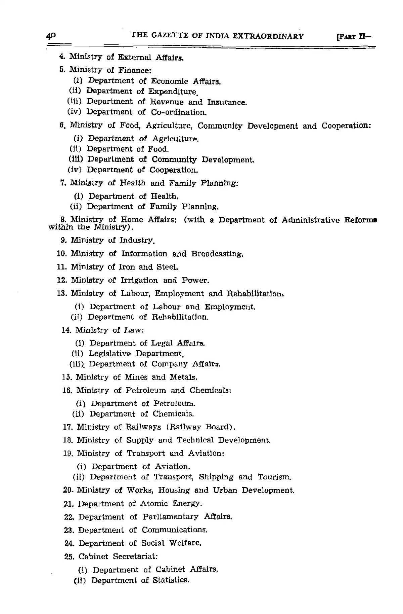
Page 5 of 16
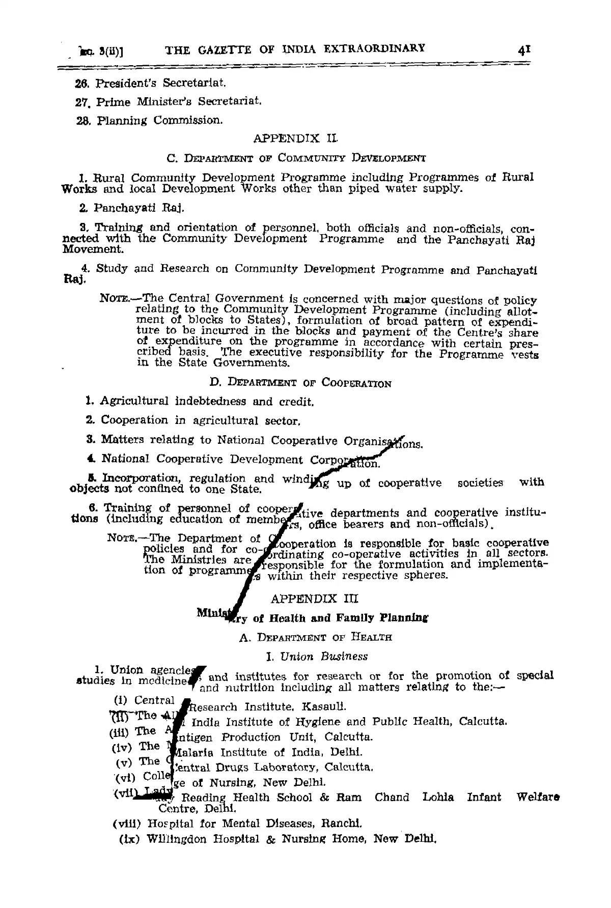
Page 6 of 16
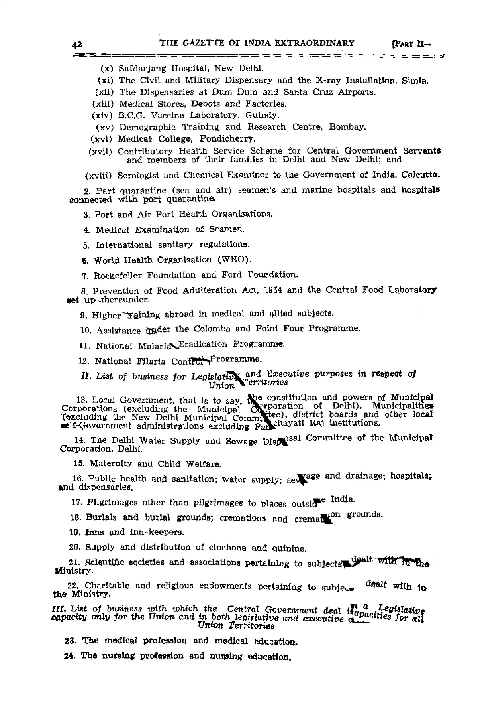
Page 7 of 16
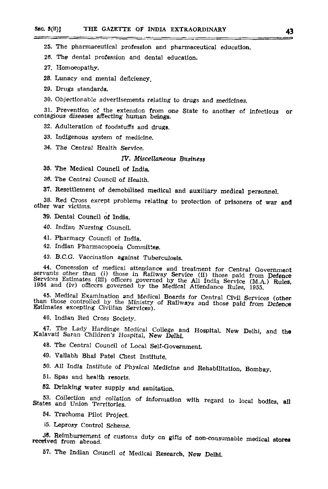
Page 8 of 16
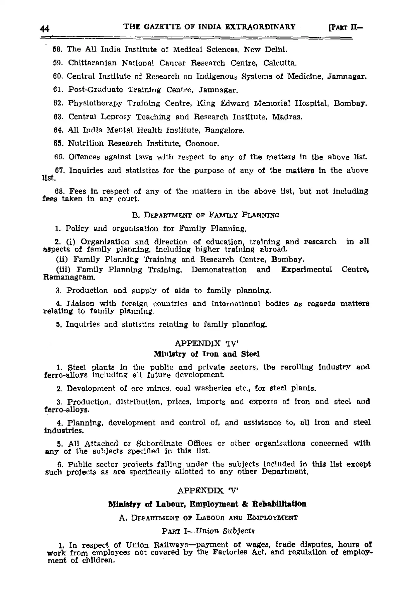
Page 9 of 16
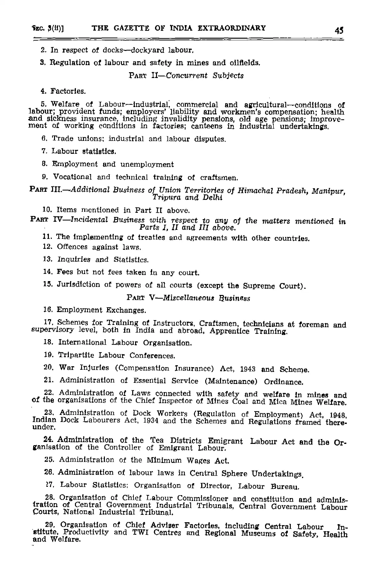
Page 10 of 16
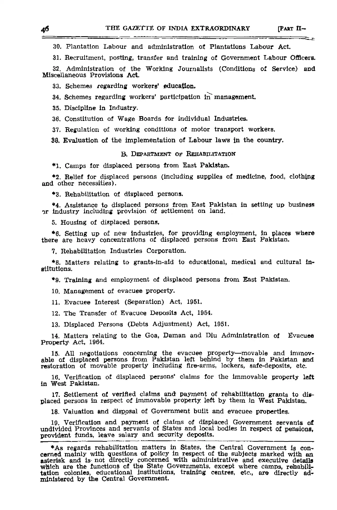
Page 11 of 16
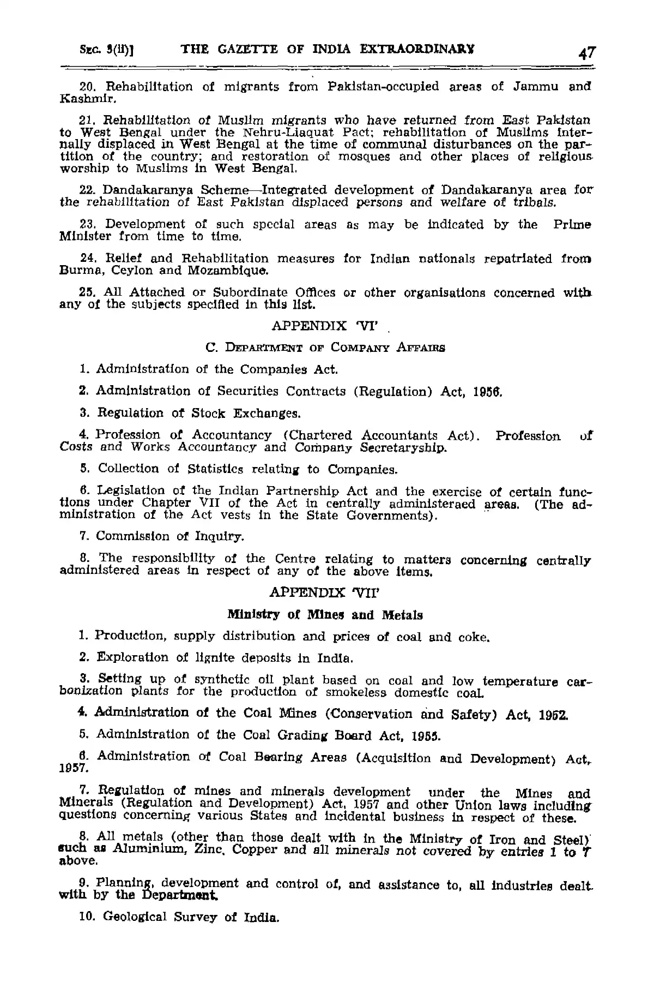
Page 12 of 16
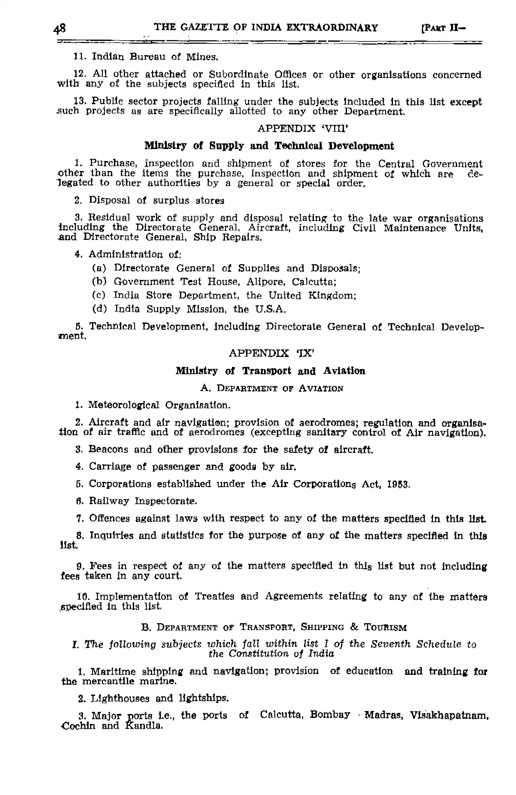
Page 13 of 16
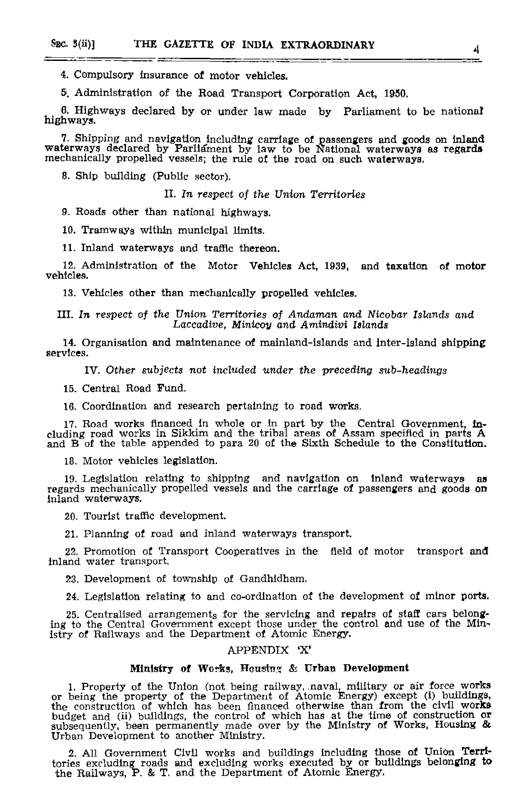
Page 14 of 16
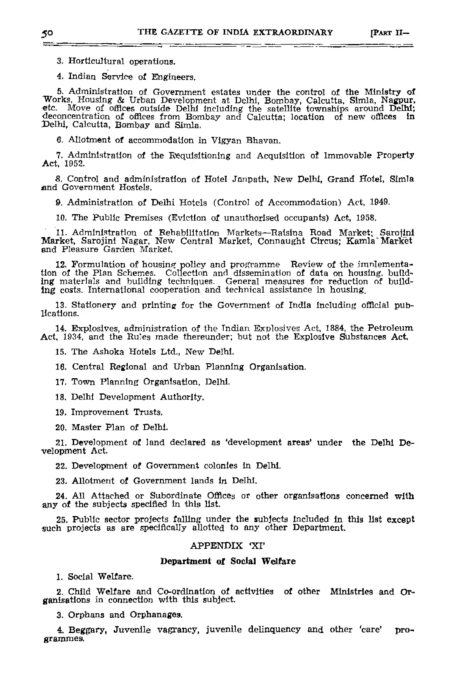
Page 15 of 16
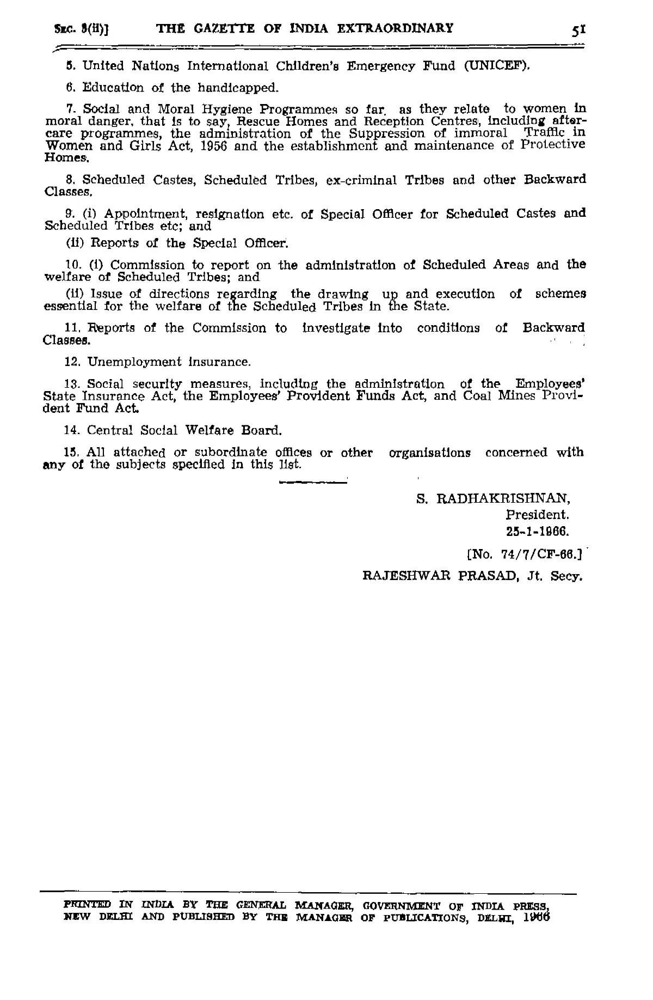
Page 16 of 16
How this document was read
Edits to the reading
| Date | By | Edit | Before → after |
|---|---|---|---|
| 14 November 2026 | mukundesh | word corrected |
Changes placed by an inference rule
| Change | Rule | Status | What |
|---|---|---|---|
| 14 | one_heading | accepted | change 14: the heading MINISTRY OF INDUSTRY & SUPPLY and its sub-heading A Department of Industry put as one heading, Ministry of Industry |
From the Government of India (Allocation of Business) Rules, 1961 and their amendments, as published by the Cabinet Secretariat (cabsec.gov.in), read by orgpedia. The readings of the older scanned gazettes have known gaps.